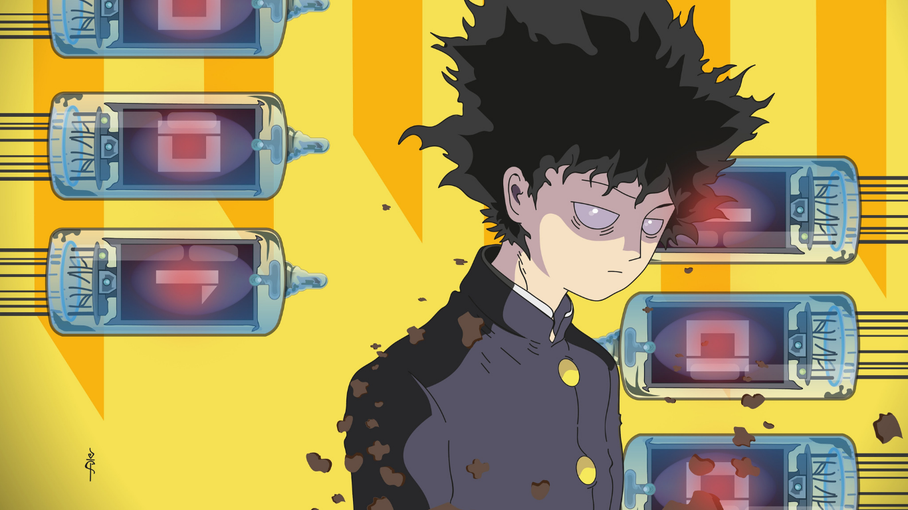

MOB PSYCHO 100
9.5 / 10
Eighth-grader Shigeo "Mob" Kageyama discovers his psychic abilities early but views them as a liability. He suppresses his power, only using it to impress his crush, Tsubomi, who becomes uninterested. To gain control, Mob seeks guidance from Arataka Reigen, a fake psychic who exploits Mob's abilities for money.
Studio : Bones
Type : TV Series
Release date : July 11, 2016